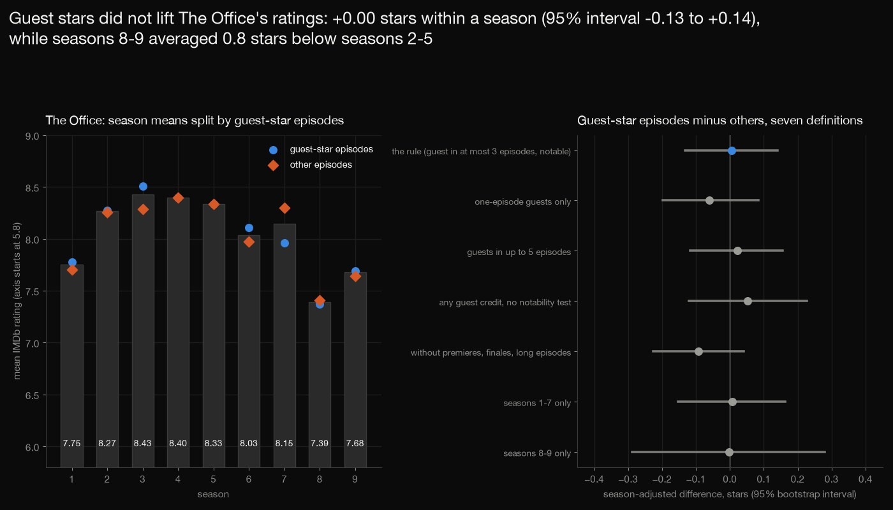
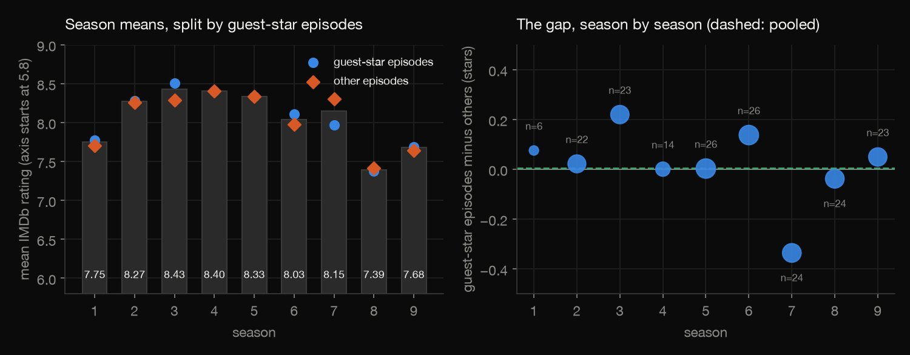
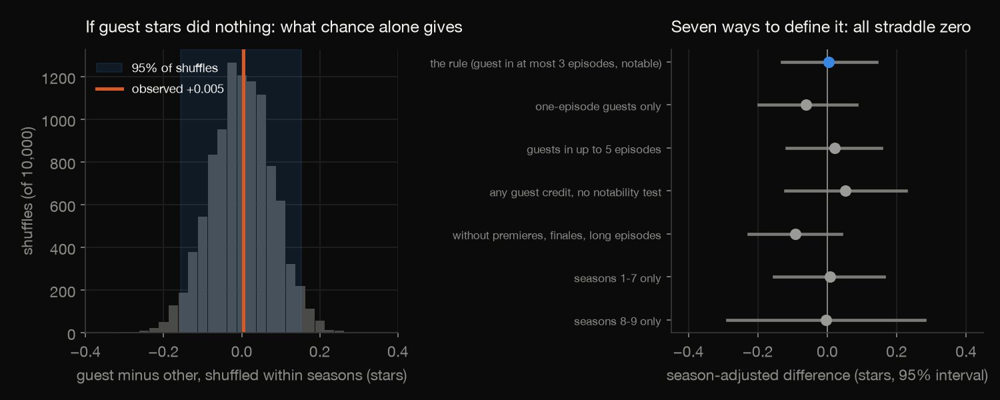
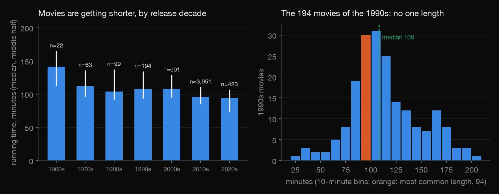
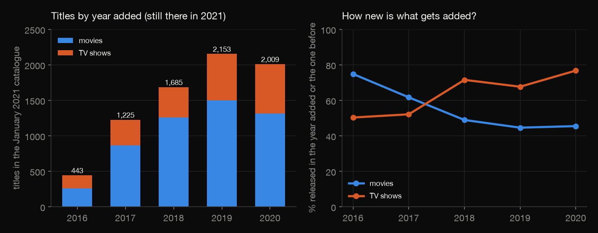
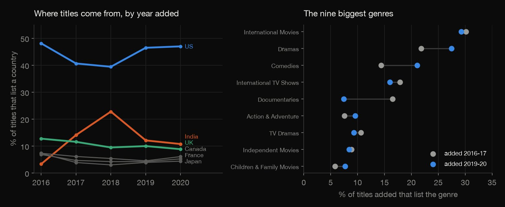

Python · Entertainment analytics · 2026-10
Did Guest Stars Lift The Office's Ratings?
Within a season, The Office's 109 guest-star episodes rated +0.005 stars against the 79 others (95% interval -0.13 to +0.14, permutation p = 0.96); seasons 8-9 sat 0.8 below seasons 2-5. Netflix's median movie runs 108 minutes for the 1990s, 94 for the 2020s.

IMDb ratings are user votes and keep moving; the guest-star flag is a proxy (TVmaze guest cast, notable = a Wikipedia article about a performer, matched by name) and the result an association in 188 episodes, with a detectable effect of about 0.2 stars. The Netflix file is a January 2021 snapshot of surviving titles from a third-party listing. Sources: Netflix titles (Kaggle, CC0), IMDb non-commercial datasets (aggregates only, courtesy of IMDb), TVmaze (CC BY-SA), Wikipedia API.
01 — The problem
Casting a famous face as a guest is a bet that it will pull an episode up. Did The Office's episodes with guest stars rate higher than the others of the same season, and how has the Netflix catalogue they sit in changed?
The task follows DataCamp's "Investigating Netflix Movies and Guest Stars in The Office" (Python, advanced). The data is Netflix's title list, IMDb's official episode ratings, and TVmaze's guest cast per episode, because the open files that exist for the show's guest stars are thin.
02 — What I built
Two data sets, one honest test:
- Netflix: running time by decade, the 1990s question, how old titles are when added, countries and genres, with the survivorship traps of a 2021 snapshot.
- The Office: a guest-star rule written down before any rating was looked at, from TVmaze's guest cast and Wikipedia articles.
- The test: guest flags shuffled within seasons 10,000 times, a bootstrap interval, and seven definitions.
- Licences: IMDb files used for aggregates only; nothing from the data is committed.
- Check:
check.pyrecounts all 545 numbers in plain Python, with no data or statistics library.
03 — How it was built
- 01
Download from four open sources
The Netflix title list (CC0), IMDb's official episode ratings (non-commercial licence, so only aggregates are published), TVmaze's guest cast for each of 202 episodes (CC BY-SA), and a Wikipedia lookup of every guest name, in batches of 50 titles (about 296 MB, never committed, checksums kept).
q = urllib.parse.urlencode({"action": "query", "format": "json", "formatversion": 2, "redirects": 1, "prop": "description|pageprops", "ppprop": "disambiguation", "titles": "|".join(names[i:i + 50])}) - 02
Fix the guest-star rule first
A guest star is someone in the episode's TVmaze guest cast, not in the main cast, in at most 3 of the 188 episodes, with an English Wikipedia article whose description names a performer (or playing themselves). That flags 109 episodes (58%); three alternatives were fixed in advance, and IMDb's three recent 'Part 2' entries of under 2,000 votes are dropped as duplicates of their halves.
ep["primary"], ep["cap1"], ep["cap5"], ep["any_credit"] = flag(3, True), flag(1, True), flag(5, True), flag(3, False) - 03
Shuffle the guest flags within each season
The statistic is the mean rating (minus the season's mean) of guest-star episodes minus that of the others. Shuffling the flags only within seasons, 10,000 times with a fixed seed, gives what chance alone produces for this exact season mix; a bootstrap within seasons gives the interval.
l = list(fl[idx[s]]); rng.shuffle(l); f[idx[s]] = l - 04
Answer the DataCamp question, and its fragility
The movies of the 1990s have a most common length of 94 minutes, held by only 8 of 194; the median and the mean are reported beside it. 'Action' means the genre 'Action and Adventure'.
s90 = mv[mv["decade"] == 1990]; act = s90[s90["listed_in"].str.contains("Action & Adventure")] - 05
Recount it all without the libraries
check.pyreads the files with the csv and gzip modules and recomputes every table and test, replaying the same random streams but scoring each permuted statistic as an exact fraction, so a tie cannot flip a count: 545 numbers, counts exact, the rest to a relative tolerance of 1e-8.dev = tot - C; k += abs(dev) >= abs(obs); nulls.append(dev)
04 — Results
No lift from guest stars. Within a season, the 109 guest-star episodes of The Office were rated +0.005 stars against the 79 others (95% bootstrap interval -0.13 to +0.14). Shuffling the guest flags within seasons 10,000 times gives p = 0.96, with 95% of shuffles between -0.16 and +0.15; without the season adjustment it is -0.035. The table gives each season's size, mean rating and share of guest-star episodes (46% to 78%).
| Season | Episodes | Mean | With guests |
|---|---|---|---|
| 1 | 6 | 7.75 | 67% |
| 2 | 22 | 8.27 | 59% |
| 3 | 23 | 8.43 | 65% |
| 4 | 14 | 8.40 | 57% |
| 5 | 26 | 8.33 | 54% |
| 6 | 26 | 8.03 | 46% |
| 7 | 24 | 8.15 | 46% |
| 8 | 24 | 7.39 | 58% |
| 9 | 23 | 7.68 | 78% |

It survives other definitions, but the test is weak. Under seven definitions the season-adjusted difference runs from -0.09 to +0.05; the table shows each with its guest and other episode counts in brackets and its 95% bootstrap interval, and no p-value is below 0.218. The shuffles imply a standard error of about 0.08 stars, so a true effect would have to be about 0.22 stars to be found 80% of the time: smaller effects cannot be ruled out in 188 episodes.
| Definition | Diff | Interval | p |
|---|---|---|---|
| The rule (109/79) | +0.00 | -0.13, +0.14 | 0.96 |
| One episode (71/117) | -0.06 | -0.20, +0.08 | 0.43 |
| Up to 5 (122/66) | +0.02 | -0.12, +0.15 | 0.79 |
| Any credit (159/29) | +0.05 | -0.12, +0.23 | 0.62 |
| No finales (86/75) | -0.09 | -0.23, +0.04 | 0.22 |
| Seasons 1-7 (77/64) | +0.01 | -0.15, +0.16 | 0.93 |
| Seasons 8-9 (32/15) | -0.00 | -0.29, +0.28 | 1.00 |

The finale and the last seasons. Seasons 8 and 9 average 7.53 stars against 8.35 for seasons 2 to 5, and 44 of their 47 episodes are below that mean. Season 9 also has the most guest episodes (78%), which is why the comparison is made inside each season. The series finale ranks 1 by rating (tied with one other), 2.1 stars above its season's mean, with 4 times the median votes: a fans' event, so one definition drops premieres, finales and long episodes. And ratings keep moving: since March 2020 the 188 episodes have shifted 0.21 stars on average.
Netflix: movies got shorter, and are added older. The median movie runs 108 minutes for the 1990s and 96 for the 2010s (3,951 movies). The most common single length of the 194 movies of the 1990s is 94 minutes, but only 8 have it (median 108, mean 114); 8 of 50 action and adventure movies of the decade run under 90 minutes.
| Released | Movies | Median | Middle half |
|---|---|---|---|
| 1960s | 22 | 142 | 112-165 |
| 1970s | 63 | 112 | 96-136 |
| 1980s | 99 | 104 | 92-138 |
| 1990s | 194 | 108 | 93-134 |
| 2000s | 601 | 108 | 95-129 |
| 2010s | 3,951 | 96 | 85-111 |
| 2020s | 423 | 94 | 73-107 |

How the catalogue changed, 2016 to 2020. The share of movies added within a year of release fell from 75% to 45% while for TV shows it rose from 50% to 77%; movies were 58% of titles added in 2016 and 65% in 2020. Only 2016 to 2020 is compared: this January 2021 snapshot keeps only titles still on the service, and holds 145 titles added before 2016.
| Added | Titles | Movies new | TV new |
|---|---|---|---|
| 2016 | 443 | 75% | 50% |
| 2017 | 1,225 | 62% | 52% |
| 2018 | 1,685 | 49% | 71% |
| 2019 | 2,153 | 45% | 68% |
| 2020 | 2,009 | 45% | 77% |

Countries and genres. The US share of titles listing a country was 48% for 2016, 39% for 2018 and 47% for 2020; India's peaked at 23% in 2018. Comparing titles added in 2016-17 with 2019-20, documentaries fell from 16.5% to 7.4% of titles and comedies rose from 14.4% to 21.0%. A title counts once for every country or genre it lists.

05 — What I'd do next
- Count and weigh the guests (how many, how famous, in how many episodes) instead of a yes-or-no flag, and look for a dose-response.
- Add episode position and storyline (premieres, finales, a departing lead) as controls, or use a show with far more episodes to detect effects smaller than 0.2 stars.
- Compare with a later Netflix snapshot to measure how many titles leave the catalogue, which this one cannot show.